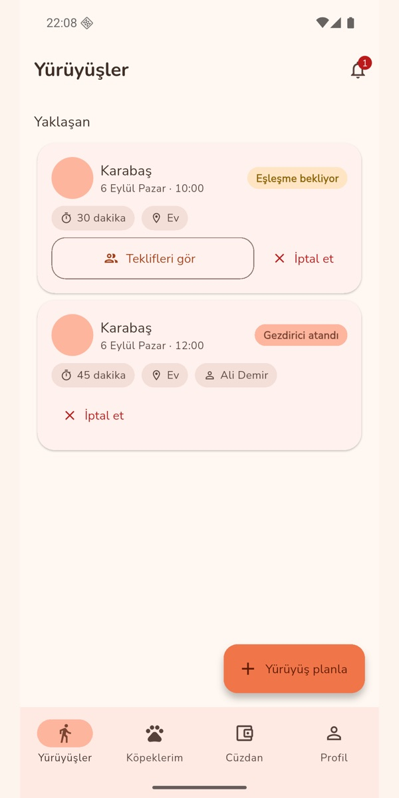
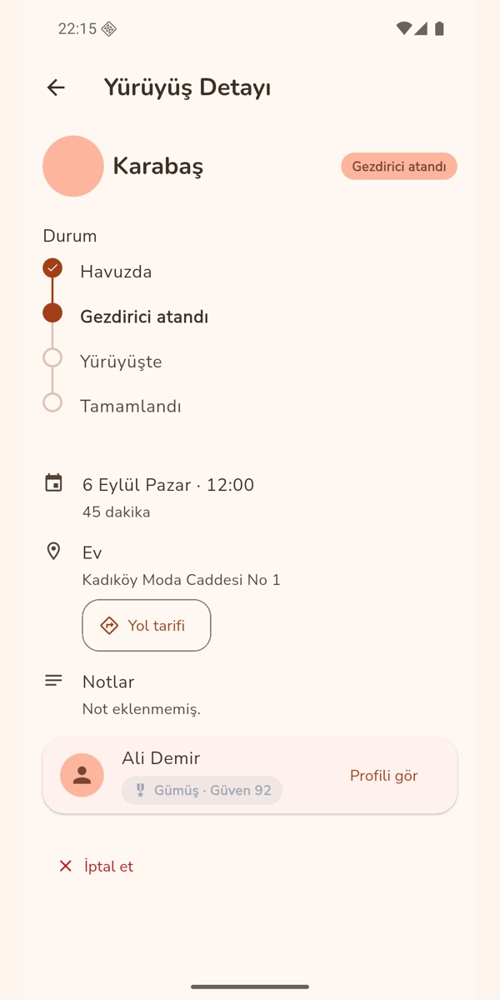
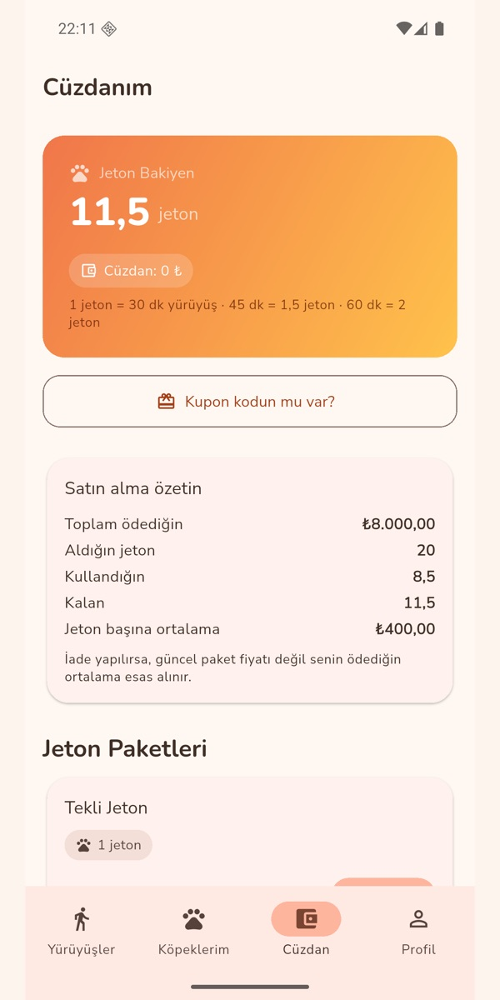

Türkiye için köpek gezdirme
Köpeğin için güvenilir bir yürüyüş arkadaşı.
Belgeleri incelenmiş, güven puanlı gezdiriciler. Yürüyüşü canlı izlersin, kapıya geldiğini görürsün, köpeğin döndüğünde sen onaylarsın.
Kapalı beta · Android · Google Play yakında.

Nasıl işler
Bir yürüyüş, altı adım. Her adımda ne olduğunu görürsün.
Sıra önemli: gezdirici seçmeden para gitmez, köpeğin dönmeden yürüyüş kapanmaz.
Jeton yükle
Yürüyüşler jetonla ödenir. Jetonun cüzdanında, son kullanma tarihiyle birlikte durur.
Yürüyüşü planla
Köpeğini, adresini, gün ve saati seç. Süreyi sen belirlersin.
Gezdiriciler teklif verir
Yürüyüşün havuza düşer; onaylı gezdiriciler notlarıyla talip olur.
Seç ve onayla
Profili, güven puanını ve seviyesini görür, birini seçersin. Jeton o an ayrılır.
Canlı izle
Yola çıktı, kapıya geldi, yürüyor. Rotayı ve olayları anında görürsün.
Teslim onayı ve puan
Köpeğin döndü mü, sen onaylarsın. Sonra iki taraf birbirini değerlendirir.
Canlı yürüyüş
Tasma senin elinde değil ama ekran senin elinde.
Yürüyüş başladığında gezdiricinin konumu anlık paylaşılır. Her önemli an bir olay olarak kaydedilir ve sana bildirim düşer.

Güven
Kapını açacağın kişi hakkında bilmen gerekenler, uygulamanın içinde.
Bir gezdirici havuza girmeden önce belgeleri incelenir. Girdikten sonra da puanı ve davranışı takip edilir.
- Belge incelemesi olmadan havuz yokKimlik, adli sicil ve adres belgesi yüklenir, yönetici inceler. Adli sicil belgesinin süresi dolunca gezdirici yenileyene kadar havuzdan çıkar.
- Güven puanı davranıştan gelirTamamlanan yürüyüş, zamanında varış ve teslim onayı puanı artırır. Geç iptal düşürür: yürüyüşe ne kadar yakınsa o kadar çok.
- Açık olay varken iş alamazBir yürüyüşte sorun bildirildiyse, karar verilene kadar o gezdirici yeni teklif veremez.
- İki yönlü değerlendirmeYürüyüşten sonra sen gezdiriciyi, gezdirici seni puanlar. Profil bu geçmişi taşır.
- Kurallar açık, sürprizsizGezdirici iptal ederse jetonun geri gelir; sen geç iptal edersen gezdiriciye tazminat ayrılır. Tüm kurallar Kullanım Koşulları'nda.
Yeni onaylanmış gezdirici
Düzenli, tamamlanmış yürüyüşler
Uzun süredir güvenilir
En deneyimli gezdiriciler
Jeton ve cüzdan
Para değil jeton dolaşır. Her hareket görünür.
Yürüyüş planlarken jeton ayrılır, iptal edilirse geri gelir, tamamlanınca gezdiricinin hakedişine dönüşür. Cüzdanında hangi jetonun ne zaman biteceğini görürsün; süresi yaklaşınca haber verilir.
- Gezdirici seçilmeden jeton gitmezTeklif aşamasında hiçbir şey ayrılmaz.
- Beta süresince davet koduKartlı ödeme açılana kadar jetonlar davet koduyla yüklenir; kart ödemesi hazırlanıyor.

Gezdiriciler için
Köpekleri seviyorsan, bu iş sana göre.
Başvur, belgelerini yükle, onaylan. Havuzdan sana uyan yürüyüşe teklif ver; hakedişin haftalık ödenir.
Belgelerini yükle
Kimlik, adli sicil, adres belgesi; varsa sertifika. Uygulamadan fotoğrafla.
Onaylan
Yönetici belgeleri inceler. Onaylanınca havuz açılır.
Sana uyan işi seç
Havuzda köpeğin cinsini, kilosunu, adresi ve saati görürsün. Notunla teklif ver.
Haftalık hakediş
Tamamlanan ve onaylanan her yürüyüş hakedişine yazılır; ödeme haftalık yapılır.
Neden SevimliPati
Köpeğini bir yabancıya emanet etmek kolay olmamalı. Biz de kolaylaştırmıyoruz; güvenilir hâle getiriyoruz.
Şehirde yaşayan bir köpek sahibinin en büyük derdi zamandır; bir hayvanseverin en büyük isteği de bu işi ciddiye alan bir düzen. SevimliPati ikisini aynı kuralların altında buluşturur: belge incelemesi, canlı takip, kapıda doğrulama, teslim onayı ve karşılıklı değerlendirme. Uygulama ne vaat ediyorsa sunucu da onu uygular; ekranda gördüğün her durum, kayıtlı bir olaya dayanır.
Sık sorulanlar
Aklına takılanlar
Gezdiriciyi ben mi seçiyorum?
Evet. Yürüyüşün havuza düşer, onaylı gezdiriciler teklif verir; profillerine, güven puanına ve seviyesine bakıp birini sen seçersin. Sen seçene kadar jetonun ayrılmaz.
Yürüyüş sırasında ne görüyorum?
Gezdiricinin konumunu, yürüyüş rotasını ve olayları: yola çıktı, kapıya geldi, kaka, su, fotoğraf. Yürüyüş bittiğinde köpeğinin döndüğünü sen onaylarsın.
Gezdirici iptal ederse ne olur?
Yürüyüş yeniden havuza düşer ya da iptal olur; jetonun geri gelir. Geç iptal gezdiricinin güven puanını düşürür.
Bir sorun olursa?
Uygulamadan olay bildirirsin. Yönetici inceler, karar verir; karar verilene kadar o gezdirici yeni iş alamaz.
Kimler kullanabilir?
Şu an Android'de kapalı beta. Kullanıcılar 18 yaş ve üzeri olmalı; kayıt sırasında Kullanım Koşulları kabul edilir. Google Play sürümü hazırlanıyor.
Ödeme nasıl?
Yürüyüşler jetonla ödenir. Beta süresince jetonlar davet koduyla yüklenir; kartlı ödeme açıldığında uygulamadan yükleyebileceksin.
Kapalı beta
İlk yürüyüşe hazır mısın?
Android, 64-bit cihazlar. Kurulumda "bilinmeyen kaynak" izni ister; Google Play sürümü hazırlanıyor.